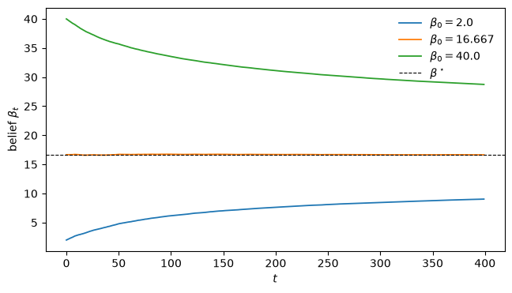
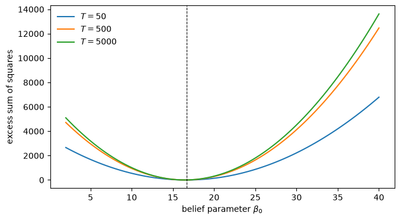

93. 1993 年对宏观经济学中有限理性前景的展望#
93.1. 概览#
本讲是本系列的收官讲座，其性质与其他各讲不同。
它不携带任何新模型。
相反，它汇集了 Sargent [1993] 于 1993 年记录下的判断——他在结束《宏观经济学中的有限理性》一书时所留下的观点、保留意见和期望——并将它们与本书开篇、也是本系列第一讲 一种奇特的有限理性定义 开篇所提出的追问联系起来。
那个追问有一个目标：一套关于转型动态的理论，即 1989 年东欧改革者们在没有地图的情况下不得不应对的非均衡调整过程。
其路径是将理性主体从我们的模型中驱逐出去，代之以行为像计量经济学家一样的”人工智能”主体——他们收集数据、形成理论、进行估计并不断适应。
我们现在可以追问：截至 1993 年，这条路径把我们带到了离目标多远的地方。
萨金特自己的答案是一份账本，正反两方均有记录。
在贷方一栏：适应性动态作为在多重均衡中进行选择的手段，以及作为计算均衡的工具——演化编程。
在借方一栏：最初的奖赏——一套转型动态理论——在很大程度上仍未兑现；而且出现了一个引人注目的不对称现象。
这一研究计划的初衷是让我们模型中的主体表现得更像计量经济学家。
萨金特观察到，计量经济学家们却并未以同样的方式回礼。
本讲将解释这一不对称现象，赋予它一个具体的数值形象，并对照最初的追问来解读这份账本。
本讲最后附有一篇后记，讲述该研究计划在 1993 年之后的演变。
让我们从一些导入开始。
import numpy as np
import matplotlib.pyplot as plt
93.2. 追问，重述#
有必要重述第一讲的论证，因为下文的一切都是以此为标准来衡量的。
理性预期提出了两项要求：个体理性，以及认知的相互一致性。
第二项要求是苛刻的一项——这正是问题的关键——当一个理性预期模型被拿去与数据对照时，它赋予模型内部主体的知识，远超过研究他们的计量经济学家所拥有的知识。
主体们是利用均衡概率分布来求解他们的欧拉方程的，而这恰恰是计量经济学家仍在苦苦估计的那些分布。
有限理性研究计划试图通过将主体降至计量经济学家自身的水平来弥合这一差距：他们也必须一边前进一边从数据中学习这些分布。
人们曾希望这能带来理性预期无法提供的东西：对系统仍处于调整过程中的描述，即在信念与结果尚未达成相互一致之前的状态。
那正是一套转型动态理论应有的样子。
我们现在依照 Sargent [1993] 自己的记账方式来盘点：先看借方，再看核心的不对称现象，最后看贷方。
93.3. 借方一栏：我们必须预先设定多少内容#
第一项保留意见关乎任意性。
有限理性最容易通过其反面——理性预期——来定义，而这种可塑性本身就是一个负担。
一旦我们不再坚持主体知晓均衡，我们就必须逐案决定：他们究竟知道什么，又是如何学习的。
他们是知道自己的效用函数和利润函数，还是也必须学习这些？
他们是懂微积分和动态规划，还是仅凭试错？
他们是仅从自身经验中学习，还是也从他人经验中学习？
我们把他们所学限定在哪一类近似函数之中？
本系列中的每一个模型都是通过预先设定来回答这些问题的，即对主体进行大量提示，并盯着我们所期望其达到的结果。
布雷模型中的主体——在 一种奇特的有限理性定义 的适应性预期模型以及最小二乘学习文献中——知道正确的供给曲线，只需估计一个条件期望值代入其中即可。
马塞特-萨金特模型中的主体懂得动态规划，知道自己的回报函数，也知道运动法则的参数形式——他们仅仅缺少其系数，而系数是通过向量自回归来更新的。
即便是 人工智能主体中作为交换媒介的货币 中受到提示要少得多的分类器主体——他们从未被告知自己的效用函数，只有在体验到效用时才能识别它——仍然被告知何时做出选择、以何种信息为条件，而其记账系统与遗传算子的整个装置都是手工设计的，并以基约塔基-赖特均衡为目标。
第二项保留意见关乎简单性。
我们赋予主体的学习任务，与一门初级计量经济学课程相比都显得微不足道，更不用说现实中的企业和家庭实际上正在隐含求解的那些任务了。
我们要求一个主体学习单一的、时不变的决策规则，或一组固定的条件期望。
我们并未要求它去学习一个联立方程系统的参数，或去推断从政策体制到分布的映射——而这些正是计量经济学困难所在。
综合来看，这些保留意见直接触及最初的奖赏。
我们让适应性主体置身其中的环境，比我们真正关心的那些转型过程要稳定和友善得多。
收敛速度的结果十分稀少，而可处理性又迫使我们对主体信念的分布施加严格的限制。
因此，萨金特在 1993 年判断，适应性过程的文献远未能为一套实时转型动态理论——正是这场追问所要寻找的东西——提供牢靠的基础。
不过，他并不愿以这一失败作为结语，他所选用的棒球比喻是刻意谦逊的：
若以适应性方法迄今未能”打出全垒打”、即未能给出一套良好的转型动态理论这一失败作为本文的结尾，那既不明智，也不公平。转型动态问题由来已久、困难重重。因此，或许可以将这些方法加深了我们对该问题的理解，视为打出了一垒安打，或者至少是一记高飞牺牲打。
93.4. 为何计量经济学家未曾回礼#
这便是赋予本讲以主题的不对称现象。
有限理性研究计划归根结底是一场运动，旨在让我们模型中的主体表现得更像那些构建并估计这些模型的计量经济学家。
模仿是最真诚的恭维。
因此我们本可以预期，宏观计量经济学家会争相将这些模型拟合到数据上。
然而并未出现这样的争相追捧。
Chung [1990] 对西姆斯政策制定者模型——即 世代交叠货币经济中的适应性主体 中的应用——的估计，萨金特指出，几乎是他所知道的唯一一个在计量经济学上认真对待有限理性的宏观经济应用。
为何如此冷淡？
其中的原因值得详细说明，因为这并非品味问题。
应用计量经济学家所遵循的至理名言是卢卡斯的告诫：要警惕携带自由参数而来的理论家。
用一个有限理性主体替代一个理性主体，会增加参数：描述信念以及信念如何变动的参数。
以最简单的情形——布雷模型为例。
相对于其理性预期版本，适应性版本至少增加了初始信念，以及一个设定增益序列的参数，而人们可能还想用更多参数来描述增益的形态。
这已经足以让卢卡斯的警告有的放矢。
但还有一个更深层的问题，这也正是为何这些新增参数不仅不受欢迎，而且实际上难以估计的原因。
由于适应性系统会收敛到理性预期均衡，这些额外的参数仅仅影响瞬态过程。
数据的渐近分布不包含关于它们的任何信息。
让我们直接看一看。
93.4.1. 具体化的滋扰参数#
布雷的蛛网经济 [Bray, 1982] 通过下式设定市场价格：
其中 \(\beta_t\) 是主体预期的价格，通过对过去价格取平均而形成：
\(u_t\) 是一个独立同分布的冲击。
常数 \(t_0\) 是主体赋予其初始信念的权重，以观测值个数计量：当 \(t_0 = 50\) 时，他们将 \(\beta_0\) 视为总结了此前五十个价格，因此经过 \(t\) 期之后，\(\beta_0\) 依然带有 \(t_0/(t + t_0)\) 的权重。
这样的权重是必要的，否则这个练习将毫无内容可言。
当 \(t_0 = 0\) 时，首个增益为 \(\gamma_1 = 1\)，因此 \(\beta_1 = p_0\) 恰好成立，初始信念在一期之后便被抹去——计量经济学家将没有任何瞬态过程可供尝试估计。
当 \(b < 1\) 时，无论起始值为何，信念都会收敛到理性预期值 \(\beta^\star = a/(1-b)\)。
a, b, sigma_u = 5.0, 0.7, 1.0
t0 = 50 # weight on the initial belief
β_star = a / (1 - b) # rational expectations belief
def simulate(β0, u):
"Bray's cobweb under least squares learning, given a shock path u."
T = len(u)
β = np.empty(T)
p = np.empty(T)
β[0] = β0
for t in range(T):
p[t] = a + b * β[t] + u[t]
if t + 1 < T:
β[t + 1] = β[t] + (1 / (t + 1 + t0)) * (p[t] - β[t])
return p, β
print(f"rational expectations belief β* = {β_star:.3f}")
rational expectations belief β* = 16.667
初始信念 \(\beta_0\) 就是这个额外的”有限理性”参数。
来看三个初始信念迥异的经济体如何遗忘各自的起点。
rng = np.random.default_rng(0)
u = rng.standard_normal(400)
fig, ax = plt.subplots(figsize=(7.5, 4))
for β0, colour in [(2.0, 'C0'), (16.667, 'C1'), (40.0, 'C2')]:
_, β = simulate(β0, u)
ax.plot(β, color=colour, lw=1.3, label=fr"$\beta_0 = {β0}$")
ax.axhline(β_star, color='k', ls='--', lw=0.8, label=r"$\beta^\star$")
ax.set_xlabel("$t$")
ax.set_ylabel(r"belief $\beta_t$")
ax.legend(frameon=False)
plt.show()

图 93.1 The belief forgets its starting point#
三者都收敛到了 \(\beta^\star\)。
现在换上计量经济学家的视角。
给定一个价格样本以及结构参数 \((a, b)\)，该模型对任何候选初始信念 \(\beta_0\) 都蕴含着一个冲击 \(\hat u_t = p_t - a - b\,\beta_t(\beta_0)\)，因为信念路径由 \(\beta_0\) 和观测到的价格共同确定。
隐含冲击的平方和衡量了给定的 \(\beta_0\) 与数据的拟合程度。
def belief_path(β0, p):
"Belief sequence implied by an initial belief and an observed price path."
T = len(p)
β = np.empty(T)
β[0] = β0
for t in range(1, T):
β[t] = β[t - 1] + (1 / (t + t0)) * (p[t - 1] - β[t - 1])
return β
def ssr(β0, p):
"Sum of squared implied shocks, as a function of the belief parameter β0."
β = belief_path(β0, p)
return np.sum((p - a - b * β) ** 2)
数据能否将 \(\beta_0\) 确定下来，是一个关于信息随着样本增大而积累速度的问题。
自然的判读方式是看超额残差平方和——一个错误的 \(\beta_0\) 相对于最优值拟合得有多差。
对于一个普通的、可良好识别的参数而言，每一个新的观测值都会增加对错误取值的惩罚，因此超额值会随 \(T\) 成比例增长，置信区间会以 \(1/\sqrt{T}\) 的速度收缩。
来看看这里会发生什么。
grid = np.linspace(2, 40, 80)
def excess_curve(T, seed=1):
"SSR(β₀) − min SSR across the β₀ grid, for a sample of length T."
u = np.random.default_rng(seed).standard_normal(T)
p, _ = simulate(β_star, u)
curve = np.array([ssr(b0, p) for b0 in grid])
return curve - curve.min()
fig, ax = plt.subplots(figsize=(7.5, 4))
for T, colour in zip((50, 500, 5000), ('C0', 'C1', 'C2')):
ax.plot(grid, excess_curve(T), color=colour, lw=1.5, label=f"$T = {T}$")
ax.axvline(β_star, color='k', ls='--', lw=0.8)
ax.set_xlabel(r"belief parameter $\beta_0$")
ax.set_ylabel("excess sum of squares")
ax.legend(frameon=False)
plt.show()

图 93.2 Information about the belief parameter stops accumulating#
这些曲线彼此重叠，而不是变得越来越陡峭。
为了说明这并非所绘范围造成的假象，我们将错误 \(\beta_0\) 所受的惩罚，与同一模型中另一个普通结构参数——错误的斜率 \(b\)——从同样数据中所受的惩罚作一比较。
rows = []
for T in (50, 500, 5_000, 50_000):
u = np.random.default_rng(1).standard_normal(T)
p, _ = simulate(β_star, u)
β = belief_path(β_star, p) # belief path at the true β0
wrong_β0 = ssr(2.0, p) - ssr(β_star, p)
wrong_slope = (np.sum((p - a - 0.75 * β) ** 2)
- np.sum((p - a - b * β) ** 2))
rows.append([T, wrong_β0, wrong_slope])
for T, e_b0, e_b in rows:
print(f"T = {T:6d}: penalty for β₀ = 2 : {e_b0:10.1f} "
f"penalty for b = 0.75 : {e_b:12.1f}")
T = 50: penalty for β₀ = 2 : 2662.3 penalty for b = 0.75 : 37.8
T = 500: penalty for β₀ = 2 : 4714.1 penalty for b = 0.75 : 373.4
T = 5000: penalty for β₀ = 2 : 5097.1 penalty for b = 0.75 : 3558.9
T = 50000: penalty for β₀ = 2 : 5127.5 penalty for b = 0.75 : 35194.0
这两列的表现完全不同。
斜率取错所受到的惩罚随样本量成比例增长：数据量增加一百倍，就会带来对错误取值强一百倍的反证力度，这正是可识别性应有的样子。
而初始信念取错所受到的惩罚却停止了增长。
超过几千个观测值之后，它就被固定在一个常数上，此后每增加一次观测都无法提供关于 \(\beta_0\) 的信息。
\(\beta_0\) 的置信区间永远不会收缩；该参数根本无法被一致地估计出来。
这正是问题的技术核心所在。
有限理性所增添的参数完全存在于瞬态过程之中。
无论我们此后观察经济多长时间，一个瞬态过程所贡献的信息量都是固定而有限的，因此这些参数就变成了估计上的滋扰——它们进入似然函数，而数据对它们能够说明的内容始终是有界的。
而且还有一个最终的、决定性的原因，可以解释计量经济学家们冷淡反应。
许多应用宏观计量经济学家所寻求的方法，恰恰是要减少解释数据所需的参数数目。
而有限理性所提供的恰恰不是减少，而是相反。
它提供的是更多参数，其中大多数还识别得很弱。
于是，这份恭维只是单向而行。
理论家们按照计量经济学家的形象重塑了他们的模型主体；而计量经济学家们面对充满额外、识别薄弱参数的模型，且已被卢卡斯明确告诫要警惕正是此类情况，便婉拒了这份礼物。
93.5. 贷方一栏：选择、计算，以及一份被回赠的礼物#
这份账本并非单方面的。
与前述借方相对，萨金特列出了三项真正的成就，其中最后一项悄然抵消了刚刚描述的那种不对称现象的一部分。
均衡选择。
在一个理性预期模型存在多重均衡的地方，一个由适应性主体构成的系统往往会收敛到某一个特定的均衡，从而使学习成为在多重均衡中进行选择的手段。
我们已多次见证这一点： 世代交叠货币经济中的适应性主体 中被选中的低通胀均衡、 汇率不确定性、学习与实验 中依赖历史路径的汇率、以及 人工智能主体中作为交换媒介的货币 中的基本货币均衡。
萨金特坦率地承认，他对这种用法的偏爱，与他对执行这种选择的动态过程本身的怀疑之间，存在某种张力：
我知道，对实时动态过程心存怀疑、却又保留由其所选中的均衡，这在逻辑上是不一致的。我承认，我对第六章所描述的货币模型中所执行的那种选择所抱有的偏爱，部分源于我先验地相信被选中的那些均衡在我看来是合理的。
演化编程。
如果一个由适应性主体构成的群体能够可靠地收敛到某个均衡，我们就可以将该群体作为一种计算该均衡的方法来运行，尤其是在那些复杂到无法手工求解的模型中。
人工智能主体中作为交换媒介的货币 正是这样处理五种商品的基约塔基-赖特经济的，因为当时并没有现成的解析刻画方法。
萨金特预期这种用法将会被频繁采用。
为计量经济学家提供的新工具。
在这里，不对称现象出现了反转。
关于并行算法和遗传算法的文献，为计量经济学家提供了新的计算工具——其中包括遗传算法和随机高斯-牛顿程序——用以求解他们自身的估计和优化问题。
例如，麦格拉坦就曾使用遗传算法来搜索极大值的邻域，然后再切换到牛顿法，这一用法在 遗传算法与分类器系统 中已有提及。
因此，计量经济学家终究还是采纳了这些适应性算法，只不过并非将其作为他们所研究的主体的模型，而是作为自己手中的工具。
这份恭维终究得到了回赠，只不过是从侧门进入的：算法跨越了界限，而模型没有。
93.6. 对照追问来解读这份账本#
让我们把这两栏账目与我们最初设定的目标对照一番。
借方一栏保存着奖赏本身。
一套关于实时转型动态的理论——即东欧改革者们所缺乏的那张地图——到 1993 年为止，在很大程度上仍未被认领，其阻碍在于任意性、需要大量提示、学习任务过于简单，以及经验支持的匮乏。
贷方一栏保存着这段旅程沿途所交付的成果：一种在多重均衡中进行选择的、有原则的方法，一种计算那些难以用解析方法处理的均衡的实用方法，以及一次计算技术向计量经济学本身的转移。
贯穿全书的组织性意象，正是计量经济学家与模型内部主体之间的鸿沟。
理性预期通过将主体提升到计量经济学家所不具备的知识水平，来弥合这一鸿沟。
有限理性则提议从另一端来弥合它，把主体降低到计量经济学家的水平，让他们去学习。
按萨金特自己的记账方式，到 1993 年，这一研究计划尚未交出促使它诞生的转型动态理论，而它试图去模仿的计量经济学家们，也一直对这些模型保持距离——理由很充分：这些模型增添了数据无法识别的参数，而计量经济学家想要的恰恰是更少的参数。
但它确实加深了问题的深度，选择了均衡，计算了均衡，并把自己的工具借给了那些婉拒了它的模型的计量经济学家。
这就是 1993 年时，宏观经济学中有限理性前景所处的状态。
93.7. 后记：这一研究计划后来的走向#
三十年的时间，足以让我们看清哪些 1993 年的担忧是永久性的，哪些则只是关于一个当时尚未站稳脚跟的领域。
93.7.1. 任意性被规训了#
第一项保留意见是，一旦我们不再坚持主体知晓均衡，就没有任何东西能告诉我们该用什么来取代它。
后来出现的规训机制是预期稳定性。
埃文斯和洪卡波亚 [Evans and Honkapohja, 2001] 证明，一个理性预期均衡是否可学习，取决于从感知运动法则到实际运动法则的映射所满足的某个条件——正是 一种奇特的有限理性定义 中的那个 \(T\) 映射——而且这一条件在很大程度上独立于学习算法的具体细节。
这正是 1993 年所缺失的东西。
选择不再是建模者恰好写下的那个递归式的偶然产物；一大类合理的学习规则会选出相同的均衡，人们无需进行任何模拟便可判断出这些均衡是什么。
世代交叠货币经济中的适应性主体 中的稳定性反转正是一个例证。
在 1993 年，它看起来像是关于最小二乘法的一个特有事实，仅由 Bruno and Fischer [1990] 用另一种估计方法得出相同结果这一事实来加以支撑。
E-稳定性解释了为何两者会一致。
93.7.2. 转型动态理论确实到来了，但形式比人们所期望的要狭窄#
那份奖赏原本是一套关于非均衡调整的理论。
而这一研究计划所交付的，实际上是一套关于偏离均衡的理论：逃逸动态。
我们在 世代交叠货币经济中的适应性主体 末尾所模拟出的锯齿形状，在 1993 年不过是一个数值上的趣闻。
Cho et al. [2002] 运用大偏差理论对其进行了解析刻画，计算出了最可能的逃逸路径以及逃逸发生的速率，而 Williams [2019] 又大大扩展了这一刻画。
QuantEcon 讲座 逃离纳什通胀 和 先验、逃逸与学习循环 详细讲解了这两方面的内容。
这比最初追问所要求的要少。
它描述的是从自我确认均衡出发的反复性偏离，而非一个从未有过市场经济的国家迎来市场经济这一事件本身。
但这确实是一套关于一个不会安定下来的系统的、真正的理论，是推导得出而非模拟得出的，而在 1993 年，这样的理论并不存在。
93.7.3. 计量经济学家终究回礼了#
在这一点上，1993 年的评估被彻底超越了。
我们前面看到的障碍，是新增参数存在于一个逐渐消失的瞬态过程之中。
但那一论证仅适用于采用 \(1/t\) 增益的学习方案，这种方案会收敛并随后停止移动。
常数增益学习则不存在这种瞬态过程。 信念永不安定；它们会持续不断地移动，而它们的运动本身正是数据平稳分布的一部分。
因此，增益像一个普通结构参数那样是可识别的——从整个样本中、以通常的速率识别出来——而不像 \(\beta_0\) 那样，只能从一段有界的初始时期中识别。
让我们在我们一直使用的模型上验证这一点。
def simulate_constant_gain(β0, gain, u):
"Bray's cobweb when agents discount old prices at a fixed rate."
T = len(u)
β, p = np.empty(T), np.empty(T)
β[0] = β0
for t in range(T):
p[t] = a + b * β[t] + u[t]
if t + 1 < T:
β[t + 1] = β[t] + gain * (p[t] - β[t])
return p, β
def ssr_gain(g_hat, p, β0):
"Fit criterion for a candidate gain, given observed prices."
T = len(p)
β = np.empty(T)
β[0] = β0
for t in range(1, T):
β[t] = β[t - 1] + g_hat * (p[t - 1] - β[t - 1])
return np.sum((p - a - b * β) ** 2)
gain_true = 0.05
for T in (500, 5_000, 50_000):
penalties = []
for seed in range(20): # average out sampling noise
u = np.random.default_rng(seed).standard_normal(T)
p, _ = simulate_constant_gain(β_star, gain_true, u)
penalties.append(ssr_gain(0.08, p, β_star) - ssr_gain(gain_true, p, β_star))
print(f"T = {T:6d}: mean penalty for using gain 0.08 instead of 0.05 : "
f"{np.mean(penalties):9.1f}")
T = 500: mean penalty for using gain 0.08 instead of 0.05 : 1.1
T = 5000: mean penalty for using gain 0.08 instead of 0.05 : 9.8
T = 50000: mean penalty for using gain 0.08 instead of 0.05 : 123.6
惩罚值随样本量成比例增长，这与斜率 \(b\) 的情形完全一致，而与初始信念的情形恰恰相反。
这正是为何最终问世的计量经济学研究使用了常数增益。
Sargent et al. [2006] 利用二战后美国数据，对美联储的常数增益学习模型进行了估计——将一套真正的递归估计程序赋予了模型内部的政府，并询问数据它所使用的是哪一种增益。
Sargent and Williams [2005] 研究了政府对漂移系数的先验信念如何塑造其收敛结果，而 先验、逃逸与学习循环 对此有进一步的展开。
漂移与波动率 将一个漂移系数向量自回归模型拟合到同一段历史事件上，并追问那究竟是糟糕的政策还是糟糕的运气。
因此，这份恭维终究是双向而行的。
它需要一次学习技术上的转变——从一种会收敛的方案转变为一种永不收敛的方案——才使得这些模型变得可估计，而这一转变是出于经济学而非计量经济学上的考量而做出的。
93.7.4. 第二次以不同方式进行的撤退#
本书中的研究计划保留了个体理性，放弃了相互一致性：主体会进行优化，但所依据的信念仍处在他们自己的估计之中。
一支并行的文献沿着另一条轴线撤退。
在汉森和萨金特 [Hansen and Sargent, 2008] 的稳健性研究中，主体根本不去估计他们的模型。
他们承认自己无法知晓这个模型，于是针对他们无法排除的那些模型中的最坏情形进行优化。
这两种做法是互补的，而非相互竞争的，二者都是对 一种奇特的有限理性定义 开篇所提问题的回答：我们该如何处理理性预期所赋予的那份知识？
一种回答是，主体应当学习计量经济学家正在学习的东西。
另一种回答是，他们应当在从不学习这些知识的情况下也表现良好。
93.7.5. 算法持续跨界流动#
1993 年的账本记录了，计量经济学家们即便婉拒了这些模型，却仍采纳了这些适应性算法作为计算工具。
这种交流增多了，并再次反转了方向。
遗传算法与分类器系统 中霍兰德的”水桶传递”机制——把你的部分回报向后支付给任何促成了你的因素——正是时序差分学习，它后来成为现代强化学习的组织性思想 [Sutton and Barto, 2018]。
事后看来，人工智能主体中作为交换媒介的货币 中的分类器系统，可以被辨认为带有手工构建的函数近似器的强化学习者；而 遗传算法与分类器系统 中的感知机，则演变成了 人工神经网络简介 中的深度网络，如今正充当着函数近似器的角色。
事实证明，萨金特笔下那些人工智能主体，并非借自邻近领域的一个比喻。
它们是该领域后来所构建成果的一个早期实例。
93.7.6. 再度解读这份账本#
1993 年的借方并未被全部偿清。
选择仍然众多，我们赋予主体的学习任务，相较于真实企业所求解的那些任务，依然显得简单，也没有人拿出东欧改革所呼唤的那套转型动态理论。
但这些条目已经发生了变化。
均衡选择获得了一套理论，而不再仅仅是一组例子；非收敛现象获得了解析刻画，而不再仅仅是模拟结果；而计量经济学家们，一旦获得了一个其额外参数确实能被数据说明的模型版本，便欣然采纳了它。
计量经济学家与模型内部主体之间的鸿沟依然存在。
它变窄了，而我们如今对它的宽度也已经了解了不少。